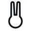
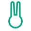
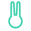

单色优先（默认 currentColor，跟随主题）· 透明底 · 无彩色底块 · 无渐变无投影 · 16px 与 22px 两列用专门的极简变体，32px 以上用主版。
列头标的是真实渲染像素：16 档就是 16px，请贴近看。
单笔画闭合轮廓：一个圆头 + 两只从头顶长出的长耳，全靠一条 3.4 个单位的等宽线兜住；耳缝是留白，不是画出来的。无填充、无眼点、无底色。
实心剪影：整体一块，耳朵靠顶部负空间让出来，眼睛是唯一挖空。只有一种颜色，不描边、不叠色，靠留白读形。
字母 Q：蛋形环 + 45° 沿半径收细的尾巴。环本来就读作进度/播放环，尾巴收成耳尖；只有一副骨架，不加描边、不加零件。
字标主导：青、兔按同一骨架重画（横细竖粗 1:1.55、端头全圆角），兔字最后一点做成标准圆点——这一个点就是可抽出来单独用的记号。


